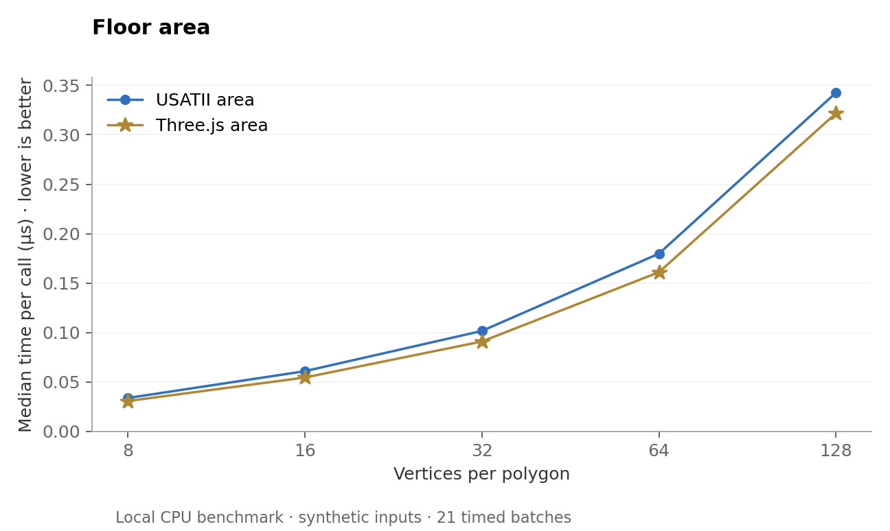
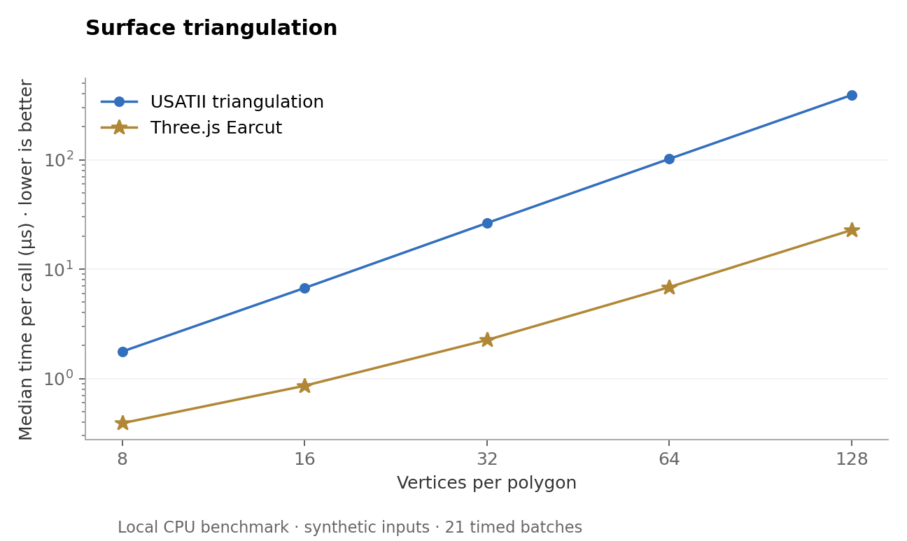
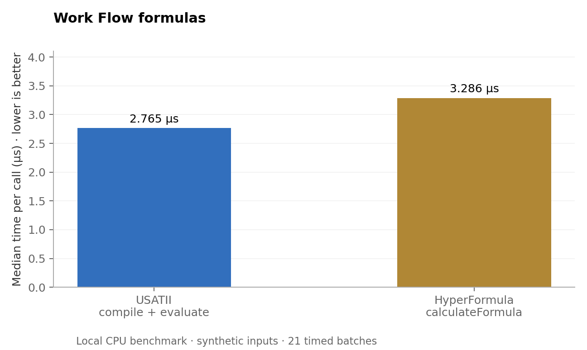

These measurements compare runnable USATII functions with Three.js and HyperFormula on identical synthetic tasks. They do not measure HOVER, monday, capture accuracy, or end-to-end user workflows.



Both geometry engines passed all 400 valid-polygon cases for area and triangulation. Both formula engines passed all 3,000 ordinary arithmetic and budget-branch cases. The four separately reported spreadsheet-semantics probes below failed in USATII and passed in HyperFormula.
| Probe | Expected | USATII | HyperFormula |
|---|---|---|---|
IF(1 = 0, 1 / 0, 42) | 42 | FORMULA_DIVISION_BY_ZERO | 42 |
IFERROR(1 / 0, 42) | 42 | FORMULA_DIVISION_BY_ZERO | 42 |
ROUNDUP(-1.25, 1) | -1.3 | -1.2 | -1.3 |
ROUNDDOWN(-1.25, 1) | -1.2 | -1.3 | -1.2 |
Seed 20261009 generates 80 simple star-shaped polygons at each of 8, 16, 32, 64, and 128 vertices, alternating winding. Ground-truth area uses analytic radial wedges. Triangulation must return n−2 faces and preserve area to relative error ≤10⁻⁹. This tests neither holes nor invalid boundaries. USATII includes boundary validation; Earcut has a different validation contract, so the timing difference includes that work.
Ten warm-up passes precede 21 timed batches. Execution order alternates. Identical adaptive repeat counts target at least 5 ms for the faster engine. Results are medians of batch means, not individual request latency. Native input conversion is outside both geometry timers. HyperFormula sheet initialization and USATII column/value preparation are outside formula timers; parse/evaluation and warm engine caches are included as exposed by each API. Formula fixtures are 1,000 numeric inputs across three expressions.
Raw files include all timings, generated inputs, per-case outputs, runtime versions, and SHA-256 hashes of the USATII modules. No production records were changed.
Raw timings and metadata · Inputs · Outputs · Runner
Reference APIs: Three.js ShapeUtils · HyperFormula